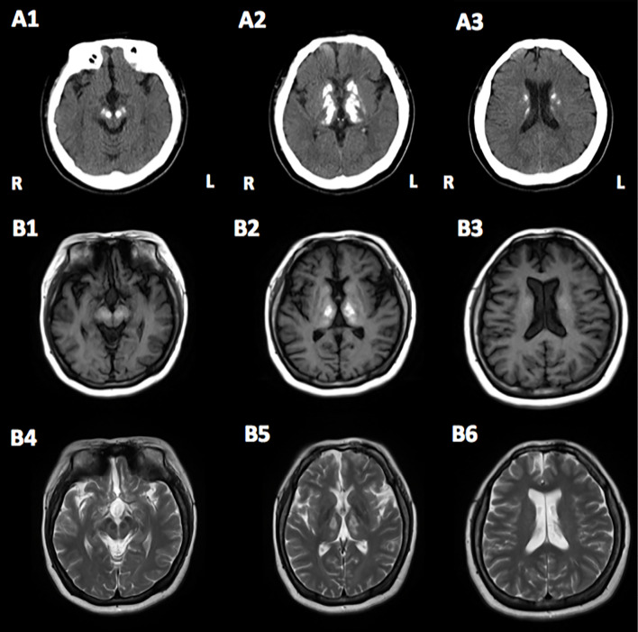
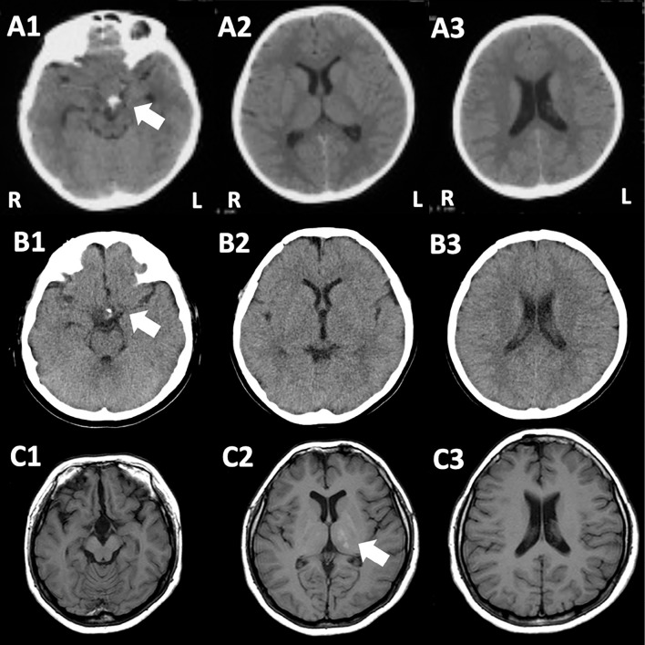
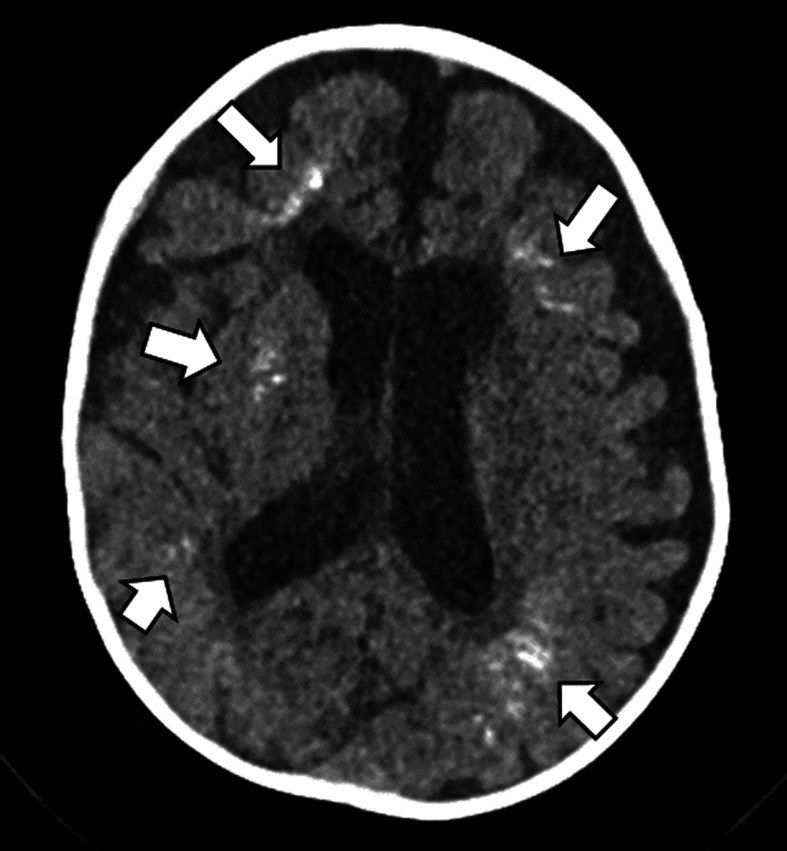
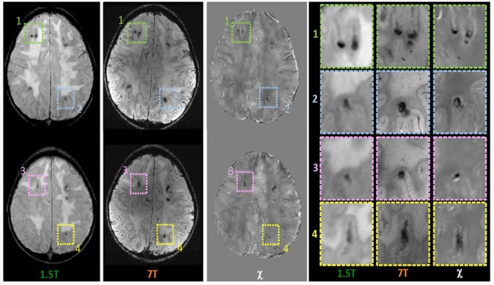

1828 — Vôi hóa não do xạ trị ở trẻ / Radiation-induced brain calcification (mineralizing microangiopathy)
Tags: pattern:voi-hoa pattern:doi-xung pattern:ton-thuong-sau-xa pattern:vi-chay-mau vung:nao-nhi vung:nao vung:chat-trang-quanh-nao-that protocol:CT-nao-khong-can-quang protocol:SWI-3T protocol:QSM protocol:MRI-nao incidentaloma:ton-thuong-sau-xa
Mức chắc chắn (certainty): tổng hợp y văn (literature synthesis) — ghép 2 ca nguyên văn có ảnh (u sọ hầu xạ 54 Gy, Intern Med 2022, PMC9841112, CC BY-NC-ND; Fanconi anemia xạ toàn thân 4,5 Gy, PCN Rep 2022, PMC11114304, CC BY), 1 tổng quan hình ảnh nhi có ca 4 tháng tuổi sau xạ + MTX nội tủy (Turk Arch Pediatr 2022, PMC9131816, CC BY-NC), 1 ca 7T–QSM phân biệt canxi với hemosiderin (Front Neurol 2024, PMC10899325, CC BY) và 1 đoàn hệ 101 người sống sót ALL dùng SWI 3T (Sci Rep 2020, PMC6971068, CC BY). Nhóm không có bệnh nhân của mình; chỗ nguồn không đủ để trả lời (tỉ lệ mắc chính xác) được ghi "chưa rõ", không suy ra.
Câu chốt: vôi hóa não sau xạ trị ở trẻ là tổn thương theo TRƯỜNG CHIẾU, không theo lãnh thổ mạch, xuất hiện nhiều năm sau xạ và thường không triệu chứng. Ba số phải thuộc: (1) dấu hiệu đầu tiên có thể chỉ sau 4 năm (MRI T1 sáng ở đồi thị trái, ca 54 Gy) và triệu chứng sau 13–14 năm (PMC9841112); (2) trên CT là đậm độ canxi đối xứng ở nhân xám sâu + chất trắng quanh não thất, trong khi SWI chỉ thấy "đốm tối" — cùng một hình ảnh với vi chảy máu do xạ (85% người sống sót ALL sau 18–24 Gy có ≥ 1 vi chảy máu) (PMC6971068); (3) QSM là chốt phân biệt: canxi nghịch từ (diamagnetic) → giảm tín hiệu trên QSM, hemosiderin thuận từ → tăng tín hiệu (PMC10899325). Vì vậy: CT không cản quang là chuẩn để xác nhận vôi hóa; không sinh thiết tổn thương vôi hóa đơn thuần.
1. Tổng quan bệnh học – cơ chế hình ảnh
1.1 Bệnh học: "vi mạch khoáng hóa" chứ không phải "u canxi hóa"
- Thuật ngữ gốc là mineralizing microangiopathy (vi mạch khoáng hóa) — tổn thương thành mao mạch – tiểu động mạch nhỏ trong trường chiếu, dẫn tới lắng đọng canxi quanh mạch và trong nhu mô kế cận. Đây là di chứng muộn của xạ trị, thường đi kèm methotrexate nội tủy ở trẻ điều trị bạch cầu cấp (PMC9131816).
- Vì sao nhân xám sâu và chất trắng quanh não thất: đây là vùng mật độ mao mạch cao nhất và là nơi dòng máu chảy chậm nhất trong não; nội mô mạch là một trong ít quần thể tế bào còn tăng sinh ở não trưởng thành nên rất nhạy với xạ (PMC10899325). Tổn thương nội mô → hyalin hóa, hoại tử fibrin, tắc mạch nhỏ → thiếu máu vi thể → khoáng hóa dystrophic.
- Hệ quả hình ảnh: vôi hóa đối xứng, nhiều ổ nhỏ, phân bố trong thể tích đã chiếu xạ — không tôn trọng ranh giới lãnh thổ động mạch. Đây là điểm khác biệt cốt lõi với nhồi máu và với di căn.
1.2 Vật lý: vì sao canxi "sáng trên CT, sáng trên T1, tối trên SWI"
- CT: canxi hấp thụ tia X mạnh hơn nhu mô mềm → tăng đậm độ. Trên CT không cản quang, canxi điển hình 100–1.000 HU (vật lý chung, không phải số của bài gốc); mỡ −40 đến −120 HU; máu tụ cấp 50–90 HU. Vì vậy CT là "chuẩn vàng" để khẳng định canxi — không có mô nào khác trong não đạt đậm độ này ngoài xương sọ, kim loại và canxi.
- MRI T1: canxi có thể tăng tín hiệu T1 — nghịch lý nhưng đã được mô tả từ lâu (PMID 10955675). Cơ chế được chấp nhận: diện tích bề mặt tinh thể lớn làm tăng tương tác với nước tự do + tạp chất kim loại (sắt, mangan, magiê) trong tinh thể canxi + canxi ngậm nước. Vì vậy T1 sáng KHÔNG loại trừ canxi và không đồng nghĩa mỡ/máu/melanin.
- T2: tín hiệu thay đổi (tăng ở vùng khoáng hóa ngậm nước, giảm ở ổ đặc) — không dùng một mình.
- SWI/T2*: canxi gây mất tín hiệu (blooming) do khác biệt từ tính giữa canxi và nước, nên giống hệt vi chảy máu. Đây là cạm bẫy số 1 của bài này.
- QSM: đo độ cảm từ (χ) định lượng. Canxi = nghịch từ → χ âm → giảm tín hiệu trên ảnh QSM; hemosiderin/ferritin = thuận từ → χ dương → tăng tín hiệu. Ca 7T của Celardo cho thấy đúng nguyên tắc này: ổ tăng tín hiệu QSM = hang mạch/vi chảy máu do xạ; ổ giảm tín hiệu QSM = vôi hóa nhu mô sau hóa–xạ (PMC10899325).
1.3 Thời gian tiềm tàng và liều — hai con số quyết định cách theo dõi
- Ca u sọ hầu (PMC9841112): xạ phân liều 54 Gy quanh hố yên (gồm hai đồi thị, nhân đậu, thân não trên) lúc 7 tuổi; mổ lại lúc 8 tuổi; MRI 11 tuổi đã có điểm tăng tín hiệu T1 ở đồi thị trái, lan dần sang hai đồi thị, nhân đậu, nhân đỏ trong 3 năm; đến 20 tuổi mới có parkinson + thất điều. Tức 4 năm để có dấu hiệu hình ảnh, 13–14 năm để có triệu chứng.
- Ca Fanconi anemia (PMC11114304): xạ toàn thân chỉ 4,5 Gy lúc 5 tuổi (chuẩn bị ghép tủy), MRI lúc đó bình thường; 12 năm sau CT thấy vôi hóa lan rộng ở thùy trán, thùy đỉnh, thùy chẩm, nhân xám, đồi thị, trung não, thân não, kèm triệu chứng loạn thần. Bài học: liều thấp không loại trừ — Fanconi là hội chứng tăng nhạy cảm phóng xạ do khiếm khuyết sửa chữa DNA.
- Nhóm ALL sau xạ 18–24 Gy (PMC6971068): 101 người sống sót, trung bình 27,6 năm sau chẩn đoán, 97% có MTX nội tủy; 85% có ≥ 1 vi chảy máu trên SWI 3T; liều 24 Gy làm tăng gấp 5 lần nguy cơ nhiều vi chảy máu so với 18 Gy (RR 5,0; KTC 95% 2,57–10,32). Đây là bằng chứng định lượng mạnh nhất cho việc liều xạ thấp cũng để lại tổn thương vi mạch.
- Tỉ lệ mắc vôi hóa não sau xạ ở trẻ: chưa rõ — không có nghiên cứu đoàn hệ đếm tỉ lệ bằng CT ở mọi bệnh nhi sau xạ; y văn chỉ mô tả "thỉnh thoảng gặp" ở người sống sót bạch cầu cấp nhi (PMC9131816). Không được trích con số không tồn tại.
1.4 Vì sao vôi hóa lại gây triệu chứng — và vì sao thường KHÔNG
- Thường không triệu chứng vì canxi nằm trong mô đã mất chức năng từ trước (di chứng vi mạch), không choán chỗ, không phù. Nhiều ca chỉ phát hiện tình cờ khi chụp vì lý do khác.
- Có triệu chứng khi tổn thương đủ lan: ca 54 Gy có parkinson không đáp ứng levodopa kèm thất điều, DaT-SPECT chỉ giảm nhẹ (SBR phải 7,46, trái 6,94) → triệu chứng không do mất tế bào dopaminergic mà do tổn thương lan tới chất trắng quanh não thất; SPECT tưới máu cho thấy giảm tưới máu toàn tiểu não kèm nhân xám hai bên = crossed cerebellar diaschisis (PMC9841112). Đây là lý do không được quy mọi parkinson sau xạ cho "tái phát u".
2. Mẫu hình + chẩn đoán phân biệt theo vị trí (gamut)
2.1 Gamut theo vị trí trong trường chiếu
- Nhân xám sâu (đồi thị, nhân đậu, đuôi, nhân đỏ): vôi hóa do xạ (đối xứng, theo trường), Fahr/PFBC, suy cận giáp, nhiễm trùng bẩm sinh, thiếu oxy–thiếu máu cục bộ cũ.
- Chất trắng quanh não thất: vôi hóa do xạ ± MTX, CMV bẩm sinh, di chứng viêm màng não, xơ hóa chất trắng do xạ (bài 261).
- Vỏ não/thùy (gyriform, theo bờ cuộn não): mineralizing microangiopathy thể vỏ (QSM giảm tín hiệu theo dải — PMC10899325), vi chảy máu vỏ–dưới vỏ (QSM tăng tín hiệu), di căn canxi hóa (hiếm, thường có phù/ngấm).
- Thân não/tiểu não: vôi hóa do xạ (ca 54 Gy lan tới trung não; ca Fanconi tới thân não), thoái hóa thần kinh, phình/canxi mạch.
2.2 Gamut theo cơ chế (dùng khi chỉ có "đốm tối trên SWI")
- Canxi (nghịch từ): vôi hóa do xạ, Fahr, suy cận giáp, u canxi hóa.
- Sắt (thuận từ): vi chảy máu do xạ, hang mạch do xạ, microbleed tăng huyết áp, amyloid angiopathy (hiếm ở trẻ).
- Không phải cả hai: khí, kim loại (nhiễu), xương sọ ở rìa trường nhìn, hiệu ứng trường (field inhomogeneity).
3. Bảng so sánh phân biệt (ma trận đối chiếu)
| Thực thể (entity) | Hình ảnh điển hình (CT/MRI) | Chốt vào (rule-in) | Chốt loại (rule-out) | Gợi ý xác nhận |
|---|---|---|---|---|
| Vôi hóa do xạ trị (mineralizing microangiopathy) | CT: đốm tăng đậm độ đối xứng ở nhân xám sâu + chất trắng quanh não thất, trong thể tích đã chiếu; T1 có thể sáng; SWI tối; QSM giảm tín hiệu | Tiền sử xạ trị sọ/đầu cổ + phân bố khớp trường chiếu + CT tăng đậm độ + QSM nghịch từ | Tổn thương ngoài trường chiếu, có phù/ngấm thuốc/choán chỗ → không phải di chứng đơn thuần | So CT cũ, đối chiếu kế hoạch xạ (dose map), QSM 3T nếu có |
| Fahr / vôi hóa não nguyên phát (PFBC) | Vôi hóa hai bên nhân đậu, đuôi, đồi thị, tiểu não, đối xứng, không phù | Không tiền sử xạ, canxi–phospho bình thường, tiền sử gia đình, gen SLC20A2/PDGFB/PDGFRB/XPR1/MYORG | Tiền sử xạ đúng vùng + phân bố theo trường → không quy cho Fahr | CT + canxi/PTH + gen |
| Suy cận giáp / giả suy cận giáp | Vôi hóa nhân xám hai bên, có thể lan chất trắng | Ca↓, P↑, PTH↓ (hoặc PTH↑ nếu đề kháng) | Ca/P/PTH bình thường → loại | Xét nghiệm canxi, phospho, PTH |
| Mineralizing angiopathy ở nhũ nhi | Canxi dọc động mạch đậu–vân, nhồi máu nhân xám sau chấn thương nhẹ; nhánh mạch cong trên CTA | Trẻ < 2 tuổi, chấn thương nhẹ, nhồi máu nhân xám + canxi dọc mạch | Không có xạ trị, tuổi lớn, không nhồi máu → loại | CT + CTA/3D tái tạo theo trục mạch |
| Nhiễm trùng bẩm sinh (CMV, toxoplasma) | Canxi quanh não thất (CMV) hoặc rải rác + não nhỏ (toxo), có thể kèm giãn não thất | Huyết thanh mẹ/trẻ dương, canxi quanh não thất từ nhỏ, không liên quan trường xạ | Khởi phát sau xạ, trường chiếu rõ → loại | PCR/huyết thanh, so phim sơ sinh |
| Vi chảy máu do xạ (microbleed) | SWI: đốm tối < 5 mm, nhiều ổ, thùy trán nhiều nhất; QSM tăng tín hiệu | Tiền sử xạ + đốm tối SWI + QSM thuận từ | CT không tăng đậm độ tại cùng vị trí → không phải canxi | SWI 3T + QSM; không cần sinh thiết |
| Hang mạch do xạ (cavernoma) | SWI: ổ tối lớn có vòng hemosiderin, "popcorn"; QSM tăng tín hiệu | Tiền sử xạ 3–9 tháng đến nhiều năm + hình popcorn + QSM thuận từ | CT tăng đậm độ đặc, không vòng → canxi | MRI 3T + SWI, theo dõi |
| Tái phát u / hoại tử xạ | Khối ngấm thuốc, phù, choán chỗ, tăng tưới máu; có thể vôi hóa trong u | Ngấm thuốc tiến triển + phù + hiệu ứng khối | Vôi hóa đơn thuần, không ngấm, không phù, không choán chỗ → không phải tái phát | MRI cản quang + DWI/ASL/PET; sinh thiết chỉ khi thật cần |
3.1 Dấu hiệu "chốt" trên ảnh — đọc theo thứ tự
- CT không cản quang trước: có tăng đậm độ thật không? (so với vỏ não và với phim cũ).
- Vị trí so với trường chiếu: nằm trong thể tích 54 Gy (ca u sọ hầu) hay toàn não (xạ toàn thân)? Nếu ngoài trường → nghĩ nguyên nhân khác.
- Đối xứng: vôi hóa do xạ đối xứng nhưng không hoàn toàn; bất đối xứng mạnh gợi ý nguyên nhân mạch/tái phát.
- SWI/QSM: nếu chỉ có SWI → không phân biệt được; QSM mới tách canxi (χ âm) khỏi sắt (χ dương).
4. Protocol chụp + hệ phân độ/theo dõi
4.1 Protocol
- CT não không cản quang, lát ≤ 1 mm, cửa sổ nhu mô + cửa sổ xương; đo HU tại ổ tổn thương và so sánh với CT nền trước xạ nếu có. CT là bắt buộc khi nghi vôi hóa — MRI một mình có thể bỏ sót (canxi có thể không thấy trên MRI thường).
- MRI 3T: T1, T2, FLAIR, DWI/ADC, SWI; QSM nếu có (3T hoặc 7T) khi cần phân biệt canxi–sắt. Không cần cản quang nếu mục tiêu chỉ là di chứng vôi hóa; có cản quang khi nghi tái phát/hoại tử xạ.
- Đánh giá kèm: khám thần kinh – nhận thức (ca Fanconi có IQ toàn phần 74, tốc độ xử lý 55 ở 15 tuổi, giảm thêm ở 17 tuổi), nội tiết trục dưới đồi–yên nếu xạ vùng trên yên (bài 1752), và thính lực/thị lực nếu trường xạ bao gồm.
4.2 Theo dõi — khi nào chụp lại
flowchart TD
A[Trẻ có tiền sử xạ trị sọ hoặc toàn thân] --> B{Có triệu chứng mới?}
B -->|Không| C[Không chụp định kỳ chỉ để tìm vôi hóa]
B -->|Có| D[CT không cản quang + MRI 3T có SWI]
D --> E{CT có tăng đậm độ đúng trường chiếu?}
E -->|Có| F[Vôi hóa do xạ - không sinh thiết]
E -->|Không, chỉ đốm tối SWI| G[QSM: tăng tín hiệu = sắt, giảm = canxi]
G --> H[Vi chảy máu hoặc hang mạch do xạ - theo dõi]
F --> I{Có ngấm thuốc, phù, choán chỗ?}
I -->|Có| J[Nghi tái phát hoặc hoại tử xạ - MRI cản quang, DWI/ASL, hội chẩn]
I -->|Không| K[Theo dõi lâm sàng - không can thiệp]
- Không có guideline riêng cho theo dõi vôi hóa não do xạ. Nguyên tắc thực hành từ 2 ca và tổng quan: chụp theo triệu chứng, không chụp định kỳ chỉ để "theo dõi canxi"; không sinh thiết tổn thương vôi hóa không ngấm thuốc; theo dõi nội tiết và nhận thức là phần bắt buộc của khám muộn sau xạ.
5. Biến thể bình thường và cạm bẫy
- Vôi hóa sinh lý nhân đậu/đuôi ở người lớn (rất thường gặp, tăng theo tuổi) — ở trẻ hiếm, nên không được quy sinh lý khi chưa loại nguyên nhân.
- Canxi "sáng T1" bị đọc nhầm là mỡ hoặc máu: T1 sáng + CT tăng đậm độ = canxi; T1 sáng + CT giảm đậm độ = mỡ/máu cũ/melanin. Luôn đặt CT cạnh MRI.
- SWI "đốm tối" không phải lúc nào cũng là máu: canxi cũng blooming. Trong đoàn hệ ALL, 85% người sống sót có vi chảy máu — nếu chỉ dựa SWI sẽ gán nhầm mọi đốm tối là máu và bỏ qua vôi hóa.
- QSM đọc ngược dấu: canxi giảm tín hiệu, hemosiderin tăng. Nếu không có QSM, không được khẳng định bản chất bằng SWI.
- Liều thấp ≠ an toàn: ca Fanconi chỉ 4,5 Gy vẫn vôi hóa lan rộng sau 12 năm — vì tăng nhạy cảm phóng xạ. Hỏi kỹ hội chứng nền (Fanconi, AT, Nijmegen).
- Vôi hóa ≠ tái phát: vôi hóa đơn thuần không ngấm thuốc, không phù, không choán chỗ. Ngược lại, khối ngấm thuốc trong vùng xạ cũ phải loại tái phát/hoại tử xạ trước khi gọi là di chứng.
- Bỏ sót trên MRI thường: canxi có thể gần như vô hình trên T1/T2; nếu chỉ có MRI mà không CT, dễ bỏ sót hoàn toàn — đúng như tổng quan nhi đã cảnh báo (PMC9131816).
- Hiệu ứng trường tại rìa trường chiếu: đốm tối ở ranh giới trường xạ có thể do bất đồng nhất từ trường, không phải tổn thương thật — đối chiếu vị trí với kế hoạch xạ.
6. Tự lượng giá — Blind Quiz
Ca 1 — Trẻ 7 tuổi xạ 54 Gy vùng hố yên vì u sọ hầu; ảnh chụp lúc 20 tuổi vì chậm chạp, run, đi loạng choạng.

- Gợi ý: không có sốt, không tăng canxi máu, không tiền sử gia đình.
- Hỏi: (1) Mô tả phân bố tổn thương trên CT; (2) vì sao T1 sáng? (3) Ba chẩn đoán phân biệt và dấu hiệu nào chốt?
Bấm để hiện đáp án
- Dấu hiệu: CT (A1–A3) tăng đậm độ đối xứng ở trung não, đồi thị, nhân đậu, nhân đuôi và chất trắng quanh não thất; MRI T1 (B1–B3) và T2 (B4–B6) tăng tín hiệu tại cùng vị trí.
- Chẩn đoán: vôi hóa não do xạ trị (mineralizing microangiopathy) — canxi lắng trong vùng đã chiếu 54 Gy, T1 sáng do diện bề mặt tinh thể + tạp chất kim loại, không phải mỡ/máu.
- Phân biệt: Fahr (không tiền sử xạ, canxi–PTH bình thường), suy cận giáp (Ca↓/PTH↓), tái phát u (ngấm thuốc, phù). Chốt: tiền sử xạ + phân bố khớp trường chiếu + CT tăng đậm độ.
- Điểm hay bị bỏ: DaT-SPECT chỉ giảm nhẹ (SBR 7,46/6,94) — parkinson không do mất tế bào dopaminergic mà do tổn thương chất trắng lan rộng.
- Nguồn ảnh: Shimada T và cs., Intern Med 2022;61(24):3723–3727, PMC9841112 Fig. 2 — CC BY-NC-ND 4.0, ảnh nguyên bản (không cắt/ghép).
Ca 2 — Trẻ 11 tuổi, tiền sử xạ vùng hố yên lúc 7 tuổi; MRI tình cờ thấy một điểm sáng T1 ở đồi thị trái.

- Hỏi: Điểm sáng T1 là gì? Có phải tái phát u? Theo dõi thế nào?
Bấm để hiện đáp án
- Dấu hiệu: A1–A3 (7 tuổi) và B1–B3 (8 tuổi) chưa có bất thường ở đồi thị/nhân đậu/chất trắng; C2 (11 tuổi) có điểm tăng tín hiệu T1 ở đồi thị trái (mũi tên trắng).
- Chẩn đoán: khởi đầu vôi hóa do xạ — xuất hiện 4 năm sau xạ, trước triệu chứng 9–10 năm. Không phải tái phát: không ngấm thuốc, không phù, không choán chỗ.
- Theo dõi: không sinh thiết; chụp lại khi có triệu chứng mới; đánh giá nội tiết (sau xạ vùng trên yên) và nhận thức.
- Nguồn ảnh: Shimada T và cs., Intern Med 2022, PMC9841112 Fig. 1 — CC BY-NC-ND 4.0.
Ca 3 — Trẻ 4 tháng tuổi, bạch cầu cấp, đã xạ sọ + methotrexate nội tủy; CT sàng lọc.

- Hỏi: Mô tả tổn thương và vì sao trẻ không có triệu chứng thần kinh?
Bấm để hiện đáp án
- Dấu hiệu: nhiều ổ canxi hóa dystrophic ở chất trắng quanh não thất hai bên (mũi tên trắng), không phù, không choán chỗ.
- Chẩn đoán: mineralizing microangiopathy sau xạ + MTX nội tủy. Thường không triệu chứng vì canxi nằm trong mô đã mất chức năng, không chèn ép.
- Nguồn ảnh: Kalın S, Koral K., Turk Arch Pediatr 2022;57(3):267–281, PMC9131816 Fig. 12 — CC BY-NC 4.0, ảnh nguyên bản.
Ca 4 — Bệnh nhi có nhiều đốm tối trên SWI sau xạ; QSM được chụp thêm.

- Hỏi: Ổ nào là canxi, ổ nào là sắt? Vì sao SWI một mình không trả lời được?
Bấm để hiện đáp án
- Dấu hiệu: các ổ được khoanh (1–4) trên SWI đều tối ở cả 1,5T và 7T; trên bản đồ χ (QSM) một số ổ tăng tín hiệu (thuận từ → hang mạch/vi chảy máu), số khác giảm tín hiệu (nghịch từ → vôi hóa nhu mô theo dải vỏ).
- Vì sao: canxi và hemosiderin cùng gây mất tín hiệu SWI; chỉ QSM đo dấu của độ cảm từ mới tách được.
- Nguồn ảnh: Celardo G và cs., Front Neurol 2024;15:1362704, PMC10899325 Fig. 1 — CC BY 4.0, ảnh nguyên bản.
Bài liên quan chéo
- 1797 – Vi chảy máu & hang mạch do xạ trị sọ ở trẻ — cùng trường xạ, cùng "đốm tối SWI", khác bản chất (sắt).
- 261 – Bệnh não chất trắng do xạ trị — tổn thương chất trắng lan tỏa, không vôi hóa.
- 262 – Bệnh mạch máu lớn do xạ trị (moyamoya) — hẹp mạch lớn nhiều năm sau xạ.
- 268 – Bệnh tủy do xạ trị — cùng nguyên lý "di chứng muộn theo trường chiếu".
- 1752 – Suy tuyến yên sau xạ trị sọ ở trẻ — phần nội tiết bắt buộc của khám muộn.
- 200 – Tổng quan hệ Thần kinh
Không dùng để chẩn đoán độc lập khi chưa có người hướng dẫn.